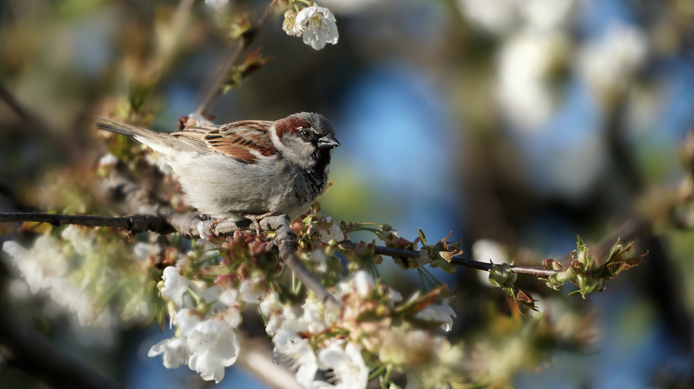

The House Sparrow is a small, familiar bird with a compact body, short tail, and thick conical bill adapted for eating seeds and other foods. Males have a grey crown, black bib, chestnut-brown markings, and pale cheeks, while females are more uniformly brown and lack the male's bold black markings. It is strongly associated with human settlements and commonly occurs around houses, buildings, gardens, markets, farms, and city streets. Compared with the Eurasian Tree Sparrow, the House Sparrow lacks the Tree Sparrow's prominent black cheek spot. The adult male House Sparrow also has a grey crown and black bib that give it a different head pattern from the Tree Sparrow. Compared with the Indian Silverbill, the House Sparrow has a heavier bill and lacks the Silverbill's pale rump and more delicate appearance. It also differs from the Scaly-breasted Munia, which has distinctive scale-like markings on its underparts and a smaller, more compact appearance. The House Sparrow's strong association with buildings and human settlements is another useful clue when identifying it in urban areas. Its compact body, thick bill, and characteristic male plumage make it one of the easiest small passerines to distinguish from other common seed-eating birds.